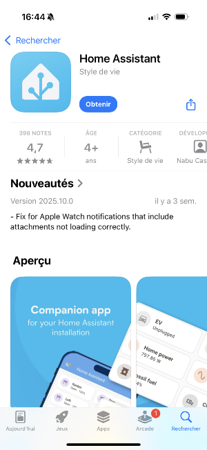
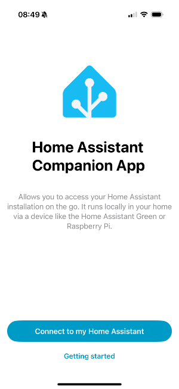
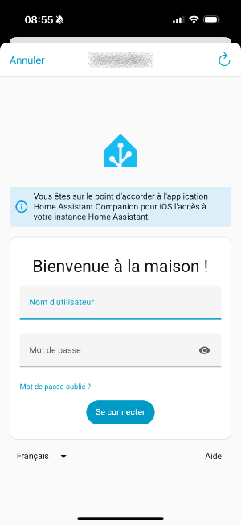
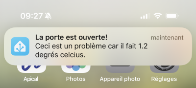
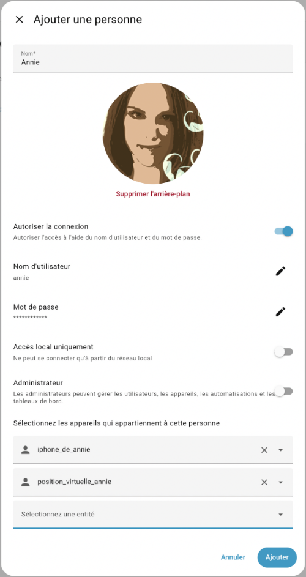
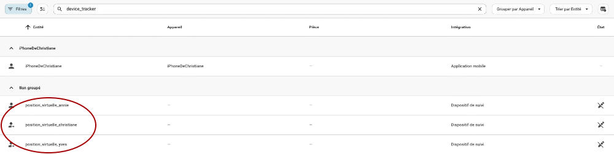
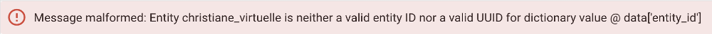

89. Détecteur de présence sous Home Assistant¶
89.1 Les zones dans Home Assistant¶
Par défaut, Home Assistant a créé une zone lors de sa configuration initiale. Elle porte le nom que vous avez donné à votre boîte (ex : Maison).
Pour tirer profit des fonctionnalités de localisation de Home Assistant, vous devez définir les autres zones d'importance pour votre système : École, Travail, Centre commercial, etc.
Comme pour plusieurs configurations, les zones peuvent être définies à l'aide de l'interface graphique ou encore dans le fichier configuration.yaml.
Interface graphique¶
Lorsque vous définissez des zones dans Home Assistant, elles sont enregistrées dans le fichier /mnt/data/supervisor/homeassistant/.storage/zone.
Pour configurer l'emplacement de votre maison (l'endroit où se trouve Home Assistant) :
- Rendez-vous dans le menu Paramètres / Pièces, étiquettes et Zones / Onglet Zones.
- L'icône de maison devrait apparaître dans votre zone initiale. Déplacez-la à l'endroit désiré.
Pour ajouter d'autres emplacements :
- Rendez-vous dans le menu Paramètres / Pièces, étiquettes et Zones / Onglet Zones.
- Cliquez sur Ajouter une zone.
- Donnez un nom à l'emplacement.
- Optionnel : choisissez une icône de la bibliothèque Material Design.
- Sur la carte, placez le marqueur vis-à-vis l'emplacement souhaité.
- Il est possible de définir un rayon pour les zones. Faites glisser le point blanc pour agrandir ou rapetisser la zone.
- Cliquez sur Ajouter pour enregistrer vos modifications.
 * Une fois les configurations terminées, vous devez redémarrer Home Assistant afin qu'elles soient prises en compte.
* Une fois les configurations terminées, vous devez redémarrer Home Assistant afin qu'elles soient prises en compte.
Fichier configuration.yaml¶
Il est également possible de définir les zones dans le fichier configuration.yaml.
Fichier configuration.yaml
zone:
- name: Cégep
icon: mdi:school
latitude: 46.059284365916156
longitude: -71.94339343404864
radius: 190
- name: Centre commercial
latitude: 46.059869287591276
longitude: -71.92660569775728
¶
89.2 Travailler avec l'application Home Assistant¶
L'application mobile Home Assistant, à installer sur le téléphone de chacune des personnes dont vous désirez connaître la position, permet de créer des automatisations qui tiennent compte de l'endroit où chaque personne se trouve.
Elle ajoute un gros plus à votre système domotique mais le prix à payer est que les données de vos déplacements se retrouveront dans le nuage alors qu'un des avantages d'un système domotique DIY est justement que les données demeurent locales.
Mais considérant que plusieurs applications nous suivent déjà sur nos téléphones, ça ne me pose pas problème.
En recherchant l'application dans l'App Store ou dans Google Play, si vous voyez plusieurs applications qui parlent de Home Assistant, choisissez celle qui utilise le logo de Home Assistant.

Grâce à l'application mobile Home Assistant, vos automatisations peuvent être plus éclatées qu'avec une simple détection de présence avec le Wi-Fi.
Vous pouvez, par exemple, démarrer le chauffage dès que vous quittez le bureau, recevoir une notification lorsqu'un de vos enfants arrive au centre commercial, allumer une lumière tamisée lorsque votre amoureux ou votre amoureuse atteint le coin de la rue pour rentrer à la maison.
La seule limite est votre imagination!
Autoriser l'utilisation des données de localisation¶
Pour que Home Assistant puisse savoir à quel endroit une personne se situe, il faut que l'application mobile soit autorisée à utiliser les données de localisation du téléphone.
Il est possible que pendant l'installation, l'application vous en demande l'autorisation.
Les autorisations peuvent par la suite être modifiées en tout temps.
Sur iPhone, rendez-vous dans Réglages / Confidentialité et sécurité / Service de localisation. Donnez le droit Toujours à l'application Home Assistant.
Sur Android, rendez-vous dans Paramètres / Sécurité et confidentialité / Paramètres de confidentialité / Gestionnaire des autorisations / Localisation. Assurez-vous que l'application Home Assistant ait l'autorisation Toujours autorisée.
Configurer l'application¶
Lors du premier démarrage de l'application mobile Home Assistant, cliquez sur Connect to my Home Assistant.

Si votre serveur est détecté, cliquez dessus pour le sélectionner.

Sinon, cliquez sur Enter address manually puis entrez l'adresse IP de votre serveur, incluant le protocole (ici : http://) et le port (ici : 8123).


La personne en possession de ce téléphone a désormais la possibilité de contrôler votre Home Assistant à partir de celui-ci, dans les limites des privilèges que vous aurez accordé à l'utilisateur correspondant.

Définir les zones¶
Pour que l'application puisse indiquer à Home Assistant à quel endroit vous vous trouvez, vous devez définir les zones d'importance pour votre système : Maison, École, Travail, Centre commercial, etc.
Pour plus d'information¶
« Setting up presence detection ». Home Assistant. https://www.home-assistant.io/getting-started/presence-detection/
89.3 Envoyer une notification à l'application mobile¶
L'intégration notify permet d'envoyer une notification à l'application mobile associée à votre Home Assistant.
Pour l'utiliser dans une automatisation ou dans les outils de développement, il faut exécuter l'action Notifications: Send a notification via mibile_app_... (notify.mobile_app_...), où les points de suspension sont remplacés par le nom du téléphone.

Si cette action n'apparaît pas, ouvrez l'application mobile puis rendez-vous dans le menu Paramètres / Application Companion / Notifications. Assurez-vous que la case Autorisation est à Activé.
Vous devez ensuite renseigner le titre et le message.
La notification apparaîtra à l'écran comme les autres notifications du téléphone.

89.4 Gérer les personnes¶
Home Assistant vous permet de définir les personnes qui peuvent être « suivies », par exemple celles que le système pourra identifier comme présentes dans la maison ou pas.
Pour gérer les personnes :
- Rendez-vous dans le menu Paramètres / Personnes.
- Cliquez le nom de la personne à éditer ou sur Ajouter une personne pour ajouter une personne.

* Téléchargez une photo de la personne. * Remplissez les informations demandées. * Si la personne a déjà installé l'application Home Assistant sur son téléphone, choisissez le téléphone qui lui correspond dans la liste déroulante. * Vous pouvez également lui assigner une position virtuelle afin de faciliter les tests de vos automatisations.Si l'emplacement de la maison a été correctement configuré et que les personnes sont correctement associées à leur application mobile sur leur téléphone, l'écran Aperçu indiquera clairement qui est à la maison (on verra le nom de votre boîte Home Assistant) et qui est absent.
Dans le cas où la personne se trouve dans une zone connue, Home Assistant affichera le nom de cette zone.

Si une personne apparaît comme absente alors qu'elle est à la maison :
- Assurez-vous que l'emplacement de la maison a été correctement configuré.
- Redémarrez Home Assistant pour vous assurer que toutes les configurations sont prise en compte.
Si une personne montre le statut Inconnu (en anglais, Unknown ou Unk), c'est qu'il y a un problème avec son téléphone.
Pour régler ce problème :
- Assurez-vous d'abord que la personne est associée à son téléphone.
- Assurez-vous ensuite que l'application Home Assistant détient les droits pour accéder aux données de localisation du téléphone,autoriser.
- Parfois, un redémarrage du téléphone est nécessaire.
Pour plus d'information¶
« Person ». Home Assistant. https://www.home-assistant.io/integrations/person/
89.5 Automatisation qui tient compte de la présence¶
J'aime configurer Home Assistant pour que les lumières s'allument automatiquement quand une personne arrive à la maison après une heure donnée.
Ceci peut être réalisé à l'aide d'une automatisation qui utilise le détecteur de présence.
Pour créer une telle automatisation :
- Paramètres / Automatisations et scènes / Créer une automatisation.
- Le type de déclencheur sera Heure et lieu / Zone.
- Dans la liste déroulante, choisissez la personne, le téléphone associé à la personne ou encore le virtuel qui doit déclencher l'action.
 * Choisissez la zone désirée puis précisez si le déclenchement doit avoir lieu quand la personne entre ou sort de la zone.
* Vous pouvez finalement ajouter, selon vos besoins, les autres déclencheurs ou conditions, par exemple pour tenir compte de l'heure, puis de spécifier les actions à réaliser.
* Choisissez la zone désirée puis précisez si le déclenchement doit avoir lieu quand la personne entre ou sort de la zone.
* Vous pouvez finalement ajouter, selon vos besoins, les autres déclencheurs ou conditions, par exemple pour tenir compte de l'heure, puis de spécifier les actions à réaliser.
Pour plus d'information¶
« Setting up presence detection ». Home Assistant. https://www.home-assistant.io/getting-started/presence-detection/
« Making Home Assistant’s Presence Detection not so Binary ». Phil Hawthorne. https://philhawthorne.com/making-home-assistants-presence-detection-not-so-binary/
89.6 Simuler la position GPS d'une personne avec device_tracker.see¶
Lorsque vous désirez que Home Assistant puisse réagir selon la position d'une personne en utilisant l'application Home Assistant, il devient difficile de tester les automatisations sans devoir vous déplacer physiquement dans la ville.
Par chance, la position géographique d'une personne peut être simulée grâce au service device_tracker.see.
Ce service peut modifier la position d'un système de suivi GPS réel ou virtuel.
Créer un device_tracker¶
Le fonctionnement d'une entité de type device_tracker est passablement différent de celui des autres types de virtuels, par exemple input_boolean ou encore input_text.
D'abord, pour créer une entité de type device_tracker, il suffit d'appeler le service (exécuter l'action) device_tracker.see.
Ensuite, la valeur de l'entité ainsi créée sera perdue au redémarrage de Home Assistant.
Voici donc comment créer un device_tracker :
Entrez ceci dans Outils de développement / Actions :
- Action : Voir (device_tracker.see).

Notez que selon les configurations de votre système, il pourrait arriver que le service ne soit pas reconnu. Si c'est votre cas, ajoutez cette ligne dans le fichier configuration.yaml :
Fichier configuration.yaml
Vous devrez ensuite redémarrer Home Assistant (un rechargement des configurations n'est pas suffisant). * ID de l'appareil : entrez l'identifiant de l'objet à modifier. Si aucune entité ne correspond à cet identifiant, une entité virtuelle sera créée.
Attention : lorsqu'on fait appel au service device_tracker.see, il faut préciser l'identifiant de l'objet et non l'identifiant de l'entité. Donc, il ne faut pas entrer le domaine device_tracker, seulement l'identifiant de l'objet.
Par exemple, ceci ne fonctionnera pas : device_tracker.position_virtuelle_annie.
il faut plutôt entrer position_virtuelle_annie. * Emplacement : si vous désirez travailler avec les zones, entrez le nom d'une zone définie dans votre système Home Assistant ou home pour simuler que la personne est à la maison.
Notez que le travail avec des zones offre moins de possibilités que le travail avec une position GPS.
 * Pour tirer tout le potentiel du positionnement, if faut travailler avec des coordonnées GPS. Deux syntaxes sont disponibles :
+ sur une ligne, le tout entre crochets carrés :
* Pour tirer tout le potentiel du positionnement, if faut travailler avec des coordonnées GPS. Deux syntaxes sont disponibles :
+ sur une ligne, le tout entre crochets carrés :
[46.058476616659746, -71.94362640380861]
+ sur deux lignes, chaque valeur précédée d'un trait d'union puis d'un espace :
- 46.058476616659746
- -71.94362640380861

Une fois le service appelé, si l'entité n'existait pas, elle est créée. Sinon, sa position est simplement mise à jour.
Retrouver l'identifiant d'un device_tracker¶
Vous pouvez confirmer que l'entité existe et retrouver son nom à partir du menu Paramètres / Appareils et services / Onglet Entités.
Suggestion : utilisez la case Filtre pour retrouver les entités plus rapidement.

Les informations sur le device_tracker sont enregistrées dans le fichier /mnt/data/supervisor/homeassistant/known_devices.yaml.
Ce fichier peut être visualisé à l'aide du module complémentaire File editor.
Fichier known_devices.yaml
device_tracker dans une automatisation qui travaille avec une zone¶
Voici un problème qui peut survenir ou non selon votre version de Home Assistant.
Lorsqu'une automatisation doit réagir quand une personne virtuelle entre ou sort d'une zone donnée, elle doit être en mesure de retrouver les coordonnées GPS du device_tracker.
Si vous avez utilisé un nom de zone pour spécifier la position d'un device_tracker, vous pourriez obtenir un message du genre « Message malformed: Entity is neither a valid entity ID nor a valid UUID for dictionary value » lorsque vous enregistrez l'automatisation.

Et même si vous n'obtenez pas ce message, le changement de position à l'aide d'un nom de zone pourrait ne pas être pris en compte par l'automatisation.
Si vous rencontrez ce problème, vous pouvez le contourner en utilisant des coordonnées GPS pour spécifier la position du device_tracker.
Voir la position d'un device_tracker sur une carte¶
Vous pouvez voir la position virtuelle dans le tableau de bord sur une carte de type Carte ou encore directement dans l'option de menu Map.
Pour que la position du virtuel apparaisse il faut donner à l'entité une position GPS et non une position à partir d'une zone.
Par défaut, la carte affichera la première lettre de l'identifiant de l'objet,objet.

Changer l'image d'un device_tracker¶
Le fichier customize.yaml permet d'apporter des personnalisations à différentes entités, notamment l'image utilisée pour représenter un device_tracker.
Si le fichier n'existe pas encore, créez-le dans le même dossier que configuration.yaml, c'est-à-dire /mnt/data/supervisor/homeassistant.
Ceci peut être réalisé dans le terminal HassOS,terminal ou encore à l'aide de le module complémentaire File editor.
Dans configuration.yaml, vous devez avoir une référence à ce fichier.
Fichier configuration.yaml
Dans le fichier customize.yaml, vous pouvez désormais préciser l'image à utiliser pour le device_tracker.
Pour utiliser vos propres images, vous devez les téléverser sur le Pi dans un dossier précis.
L'image à utliiser peut ensuite être configurée comme suit :
Fichier customize.yaml
Redémarrez Home Assistant pour que les configurations soient actives.
Désormais, l'image apparaît sur la carte plutôt que la première lettre de l'identifiant de l'entité.

Source des images : http://clipart-library.com/clip-art/kid-transparent-background-22.htm
Retrouver la latitude et la longitude d'un device_tracker¶
Grâce aux modèles, il est possible de retrouver spécifiquement la latitude et la longitude d'un device_tracker.
D'abord, comme avec n'importe quelle entité, il est possible de connaître les attributs disponibles à partir du menu Outils de développement / Modèle.
Entrez dans la zone de gauche une chaîne au format {{ states.id_de_l_entite }}.
Modèle
Voici le résultat à l'écran lorsque la position a été définie à l'aide de coordonnées GPS.
J'ai ajouté des sauts de ligne pour que les attributs soient plus visibles.
Résultat à l'écran
<template TemplateState(<
state device\_tracker.position\_virtuelle\_annie=Travail;
source\_type=gps,
latitude=46.05123588418276,
longitude=-72.00332701206209,
gps\_accuracy=0,
friendly\_name=position\_virtuelle\_annie
@ 2025-11-03T11:04:01.874055-05:00>
)>
Si la position a été définie à l'aide du nom d'une zone, il y aura moins d'attributs disponibles.
Résultat à l'écran
<template TemplateState(<
state device\_tracker.position\_virtuelle\_annie=Travail;
source\_type=gps,
friendly\_name=position\_virtuelle\_annie
@ 2025-11-03T11:15:01.874055-05:00>
)>
Voici un autre exemple où la position de l'entité n'a pas été redéfinie après un redémarrage de Home Assistant.
Résultat à l'écran
<template TemplateState(<
state device\_tracker.position\_virtuelle\_annie=not\_home;
source\_type=None,
friendly\_name=position\_virtuelle\_annie
@ 2025-11-03T11:04:55.752248-05:00>
)>
Une fois que vous connaissez les attributs disponibles, vous pouvez retrouver spécifiquement la latitude et la longitude si elles sont disponibles.
Modèle
Modèle